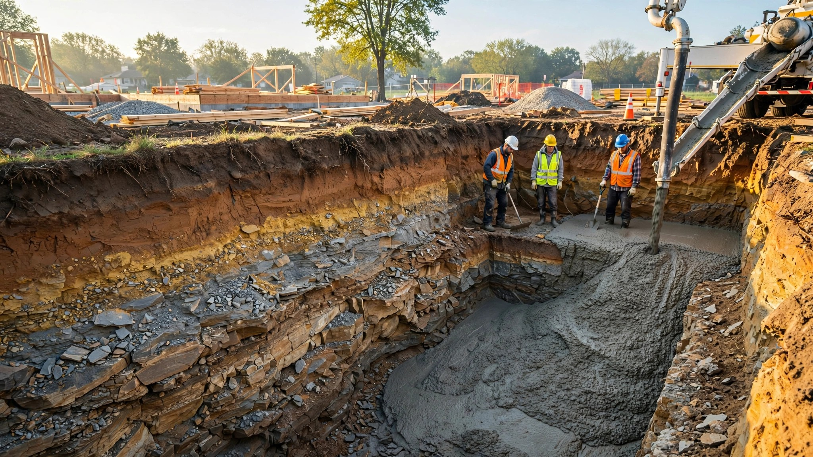

An AI Can Predict Your Home's Radon Level From the Geology Under It. Your Builder Checks a Map From 1993.

A researcher in western Turkey pointed a neural network at 957 buildings. He fed it geology data, fault line proximity, building material composition, and porosity measurements. His model predicted indoor radon concentrations with an R-squared of 0.96 and a mean absolute error of 52 becquerels per cubic meter. It correctly flagged 15.3% of those structures as high-risk before anyone cracked open a test kit.
That paper landed in February 2026, which means the academic world has a tool that can predict indoor radon concentrations at the building level with remarkable accuracy at the exact moment when the map your builder consults to decide whether your foundation needs radon protection, a map drawn in 1993, remains the authoritative reference in American residential construction. It divides 3,141 U.S. counties into three colored zones. That is the state of the art in American residential radon prevention.
21,000 Deaths and a $15 Test Kit
Radon kills more Americans than house fires, drowning, and falls combined. According to EPA risk assessment EPA 402-R-03-003, roughly 21,000 lung cancer deaths per year to the gas, making it the leading cause of lung cancer in nonsmokers and the second leading cause overall. About 13.4% of all U.S. lung cancer deaths are radon-related, according to EPA risk assessment EPA 402-R-03-003.
Around six million American homes sit above the EPA's action level of 4 picocuries per liter. Radon seeps up through fractured bedrock, permeable soils, and foundation cracks, accumulating in basements and ground-floor rooms where families sleep and children play. You cannot see it, smell it, or taste it, and the standard residential response is a charcoal test canister that costs between $15 and $30. You set it in your basement for 48 hours, mail it to a lab, and wait for results that arrive days later, long after the concrete has cured and the framing crew has moved on to the next job. Seventy-five percent of American adults have never done even that much, according to a 2024 survey of 1,006 respondents published through Healio and Ohio State's Thoracic Oncology Center. Nearly half were unaware radon posed any risk at all, a finding that should alarm anyone who understands that the gas is responsible for more deaths per year than drunk driving, house fires, and drowning combined.
What the AI Actually Does
Mutlu Zeybek's Geologically-Informed Radon Assessment model, published in Applied Radiation and Isotopes in June 2026, is not a black box. It is a physics-informed neural network, meaning it embeds the actual differential equations governing radon transport into its architecture. Radon does not move randomly; it follows physical laws that have been studied for decades, moving by diffusion through soil pores and convective transport along pressure gradients at accumulation rates governed by ventilation characteristics and building porosity, which means a model that encodes those transport equations into its architecture can trace the gas from bedrock fracture to basement air with a fidelity that purely statistical approaches cannot match. Zeybek's model decomposes indoor radon into three source terms: geological contribution from the foundation substrate, contribution from nearby fault lines, and emission from building materials themselves.
What emerges is a prediction that does not just correlate soil type with radon levels the way a lookup table might, but instead simulates the actual physical process by which radon atoms migrate from parent uranium in bedrock through fractures and soil pores, across the foundation boundary, and into the breathing zone of a living room. It models the physics of how radon actually enters a structure, constrained by equations that have been validated in decades of health physics research. Conventional machine learning approaches performed significantly worse, which is exactly what you would expect when the underlying process obeys well-characterized transport equations rather than arbitrary statistical patterns.
A separate team working with Pennsylvania's radon testing database took a different approach. Their study in Scientific Reports, published in 2026, applied random forest and quantile regression forest models to 718,111 residential radon test results. Using over 60 predictive features spanning geology, meteorology, soil drainage, elevation, heating fuel type, and building characteristics, the models estimated radon concentrations at the zip-code level and, critically, characterized the uncertainty around those estimates.
Their most important finding was not the average predictions. It was that areas with moderate average radon levels could still harbor extreme outliers, individual homes where concentrations vastly exceeded anything the county-level average would suggest. A zip code averaging 2.5 pCi/L might contain homes at 15. The county map says "Zone 2, moderate risk." The model says "look closer."
What Your Builder Actually Checks
The EPA Map of Radon Zones was developed in 1993 using indoor radon measurements, geology surveys, aerial radioactivity data, soil parameters, and foundation types available at the time. It assigns every U.S. county to one of three colored zones, high, moderate, or low, a resolution so coarse that a county spanning granite ridges and alluvial valleys gets a single label as though the geology beneath a hilltop farmhouse and the geology beneath a basement dug into fractured shale were interchangeable. USGS released an updated digital version of its underlying geologic radon potential data in 2025, but the methodology and zone assignments trace back to USGS Open-File Report 93-292.
Even the EPA warns that its own map "should not be used to determine if individual homes need to be tested." Their recommendation: test every home regardless of zone. But the IRC building code uses those same zones to determine whether radon-resistant construction is even on the table.
Appendix F of the International Residential Code, now renamed Appendix BE in the 2024 edition, contains the standard for radon-resistant new construction. It calls for a passive sub-slab depressurization system: a layer of gravel beneath the slab, a polyethylene soil-gas retarder membrane, and a 3-to-4-inch PVC vent pipe routed through the house and out the roof. During construction, this costs roughly $350 to $500.
There is a catch. Appendix BE is optional. It says so explicitly: "The provisions contained in this appendix are not mandatory unless specifically referenced in the adopting ordinance." Each jurisdiction, state, county, or municipality, must choose to adopt it. Most have not, which means the vast majority of new homes in this country are built without any radon protection at all, regardless of the geology beneath them. The Environmental Law Institute tracks adoption state by state, and the picture is a patchwork of partial adoption, voluntary programs, and outright indifference that leaves the majority of American homebuyers without any code-mandated radon protection regardless of what the geology beneath their lot actually contains. Virginia allows counties in Zone 1 to adopt Appendix F but does not require it; seventeen jurisdictions have done so. Oregon mandates radon-resistant construction in seven counties. Washington requires it in seven Zone 1 counties. Massachusetts requires it in three counties.
All of that covers a fraction of American counties, a patchwork so thin it barely qualifies as a national policy. Everywhere else, your builder pours your slab without radon protection unless you specifically ask for it, and most buyers do not know enough to ask.
The $350 Window You Cannot Reopen
Here is the construction math that makes this absurd.
A passive radon-resistant system installed during construction costs $350 to $500. Gravel beneath the slab, a polyethylene membrane over it, and a PVC vent pipe roughed in alongside the plumbing that runs from the sub-slab gravel bed through the conditioned space and out the roof. Gravel goes down before the concrete pour, membrane rolls out in minutes, and the whole addition costs maybe two hours on the foundation schedule.
If you skip it and discover elevated radon after move-in, which is the only time 25% of homeowners who bother testing will discover it, retrofit mitigation runs $800 to $2,500. The Virginia Department of Health notes that retrofit systems typically require visible exterior piping and a continuously running fan. You are paying two to seven times more for a worse-looking result, consuming electricity indefinitely, because nobody flagged the risk before the concrete truck showed up.
And the 75% who never test? They breathe it for years, sometimes decades, raising their family in a house where a $350 intervention during construction would have eliminated the exposure before they ever carried in the first piece of furniture.
Why the Models Have Not Reached the Permit Office
Building codes move slowly. The IRC updates on a three-year cycle, and radon provisions have lived in an optional appendix since at least 2006. Its 2021 edition added a requirement for post-construction radon testing, but only in jurisdictions that adopted the appendix to begin with. Updating the code to reference AI-based risk prediction would require navigating the ICC's code development process from initial proposal through public comment, committee review, floor debate, and a final membership vote, after which every state, county, and municipality that uses the IRC would need to individually decide whether to adopt the revised provisions, a cascade of bureaucratic steps that typically spans six to ten years from first proposal to widespread enforcement.
But the deeper problem is institutional. No government agency has funded the development of a U.S.-specific building-level radon prediction model validated against American geology, building stock, and climate. Zeybek's GIRA model was trained on Turkish structures. The Pennsylvania study operated at zip-code resolution, not at the level of an individual building permit. A German quantile regression forest model covered all of Germany's residential buildings, floor by floor, but used German building data and German geology. South Korean researchers mapped radon potential across 1,452 dwellings in Danyang-gun using extreme learning machines and random vector functional links that achieved an AUROC of 0.824 across ten geogenic factors including lithology, fault density, soil calcium oxide concentration, copper, lead, ferric oxide, elevation, slope, valley depth, and topographic wetness, but every one of those calibrations reflects Korean geology and Korean building stock.
Raw ingredients for an American version exist. USGS has detailed geologic and soil permeability data. EPA has decades of county-level radon testing results. Pennsylvania alone contributed 718,111 individual test records. Building permit data, foundation types, HVAC configurations, and lot-specific geology could all feed a model trained specifically for U.S. residential construction. Nobody has assembled them into a tool that a building official could query at the permit counter, not a single prototype or pilot program in any of the 3,141 counties that the 1993 map was supposed to serve.
What a Builder or Buyer Can Do Right Now
Until prediction models reach permit offices, three things are within reach today.
First, if you are building new, install passive radon-resistant construction regardless of what the county map says. At $350 to $500, it is the single cheapest piece of insurance in residential construction, less expensive than a single plumbing inspection callback and roughly equivalent to what most builders spend on the decorative stone veneer around the front door that nobody's health depends on. It works even if radon levels turn out to be low. If they turn out to be high, converting a passive system to active requires adding a fan to the existing vent pipe. Cost: $200 to $400. Total system cost if you need it: $550 to $900. Compare that to $800 to $2,500 for a full retrofit with no pre-installed piping, and the arithmetic writes itself.
Second, test before you occupy, not after you move in. The 2021 IRC Appendix BE update requires post-construction testing in jurisdictions that have adopted it, but nothing stops you from requiring it as a condition of your construction contract everywhere else. A short-term radon test takes 48 hours. Schedule it during the final walkthrough period.
Third, push your jurisdiction. ELI provides model language for state and local radon code adoption. ANSI/AARST standards (RRNC-AH for single-family, RRNC-MF for multifamily) give building officials tested specifications to reference. If your county is in Zone 1 and has not adopted Appendix BE, ask your building department why. If you are in Zone 2 with known local radon hot spots, the case is even stronger. The Pennsylvania data showed that moderate-average zones hide extreme outliers.
Limitations
This article describes prediction models validated outside the United States (Turkey, Germany, South Korea) or at zip-code rather than building-level resolution (Pennsylvania). No commercial AI radon prediction product exists for U.S. residential construction. RRNC cost estimates ($350 to $500 for passive, $800 to $2,500 for retrofit) are approximate and vary significantly by region, builder, and building complexity. The 75% non-testing figure comes from a 2024 survey of 1,006 respondents, not a census. The 21,000-death figure is an EPA estimate based on risk modeling, not counted cases. Radon levels in individual homes are influenced by hyperlocal factors including specific soil composition, foundation crack patterns, HVAC pressure differentials, and occupant behavior that even building-level models may not fully capture.